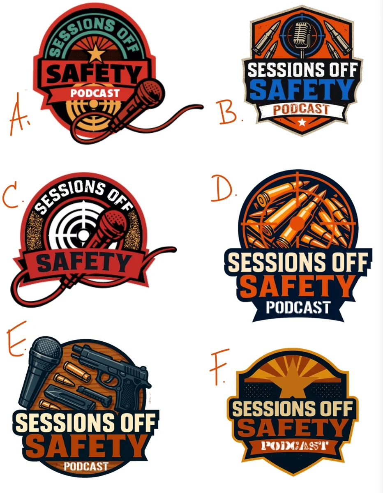
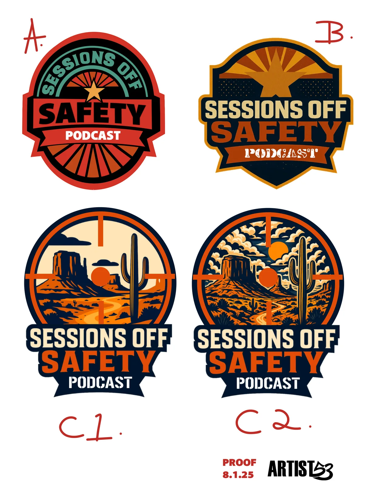
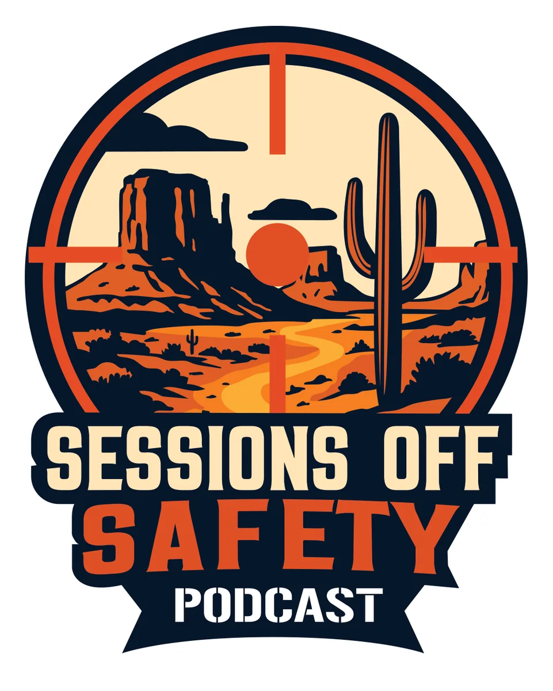
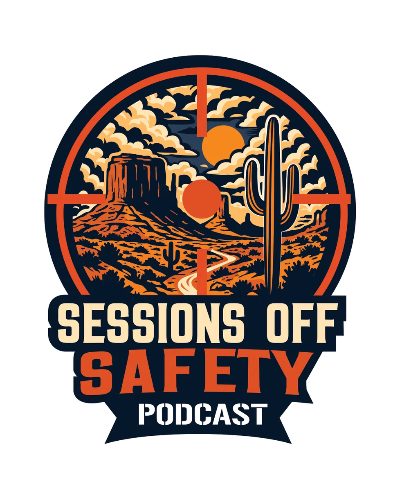

CLIK CLIK BANG · Podcast Branding · Logo Case Study
Sessions Off Safety
A bold podcast identity developed for the CLIK CLIK BANG brand universe. Sessions Off Safety needed to feel conversational, energetic and unmistakably connected to the subject matter while still carrying its own visual personality. The project began with a wide range of illustrative directions before narrowing into two final logo solutions built around the Arizona landscape and a target-inspired structure.
Back To Logo Design
Project Overview
Expanding The CLIK CLIK BANG Brand Universe
Sessions Off Safety was developed as a podcast identity associated with CLIK CLIK BANG. The challenge was to create a recognizable extension of that larger brand world without simply repeating the parent identity. The podcast needed enough personality to carry cover art, social content and future branded materials while remaining clear and recognizable at small sizes.
The final direction is an illustrative logo: custom desert imagery, a target framework and strong typography work together as one visual story rather than relying on type or a simple symbol alone.
01 / Concept Exploration
Testing A Wide Range Of Directions
The first round explored several visual approaches around the podcast name and its place within the CLIK CLIK BANG world. Microphones, target forms, ammunition imagery, badge structures and different typography treatments were tested to see which ideas could carry the right energy without losing readability.

02 / Refinement
Narrowing The Identity To C1 + C2
As the concepts developed, the strongest path shifted toward an Arizona desert scene framed by a target. The proofing round compared two earlier badge directions with two variations of that new landscape concept: C1 used a cleaner, simplified desert treatment while C2 pushed the illustration into a richer and more detailed visual style.

Final Decision
The project ultimately did not have to choose between C1 and C2. Both directions were delivered, giving the podcast a cleaner illustrative option and a more detailed illustrative option built from the same core identity.
03 / Final Identity
Two Final Logo Directions
Both final marks share the same visual foundation: the Arizona landscape, target framing, bold condensed typography and the navy, cream and orange palette. The difference is in illustration density, allowing the identity to shift between a simpler graphic treatment and a more textured, expressive scene while remaining part of the CLIK CLIK BANG brand ecosystem.

Final C1
A cleaner desert illustration with simplified forms and strong open areas for maximum clarity.

Final C2
A more detailed landscape treatment with added texture, clouds and depth while preserving the same identity structure.
04 / Original Scope Of Work
Designed As A Complete Podcast Brand
The logo was one part of a broader creative system planned for Sessions Off Safety within the CLIK CLIK BANG brand universe. The scope connected the identity to typography, platform artwork, social media and practical brand standards so the podcast could launch with a consistent visual voice.
Podcast Logo Design
Custom branding created specifically for Sessions Off Safety.
Typography Visual
A dedicated visual treatment for the phrase “We Aim to Please.”
Brand Style Guide
Font pairings, color palette and logo usage guidance for consistent application.
Social Media Kit
Reusable promotional templates for quotes, teasers and episode drops.
Podcast Cover Art
Platform-ready visual artwork developed for podcast distribution channels.
Creative Strategy
A focused strategy session and revision round to align the visual direction with the show.